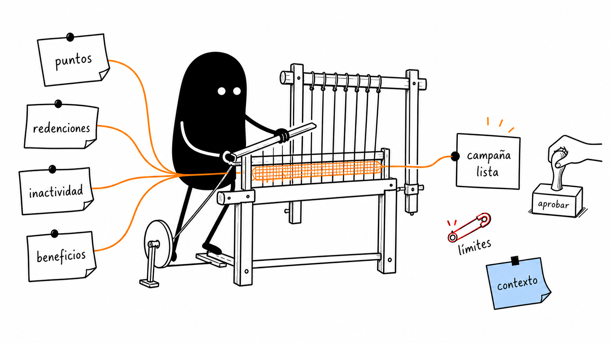
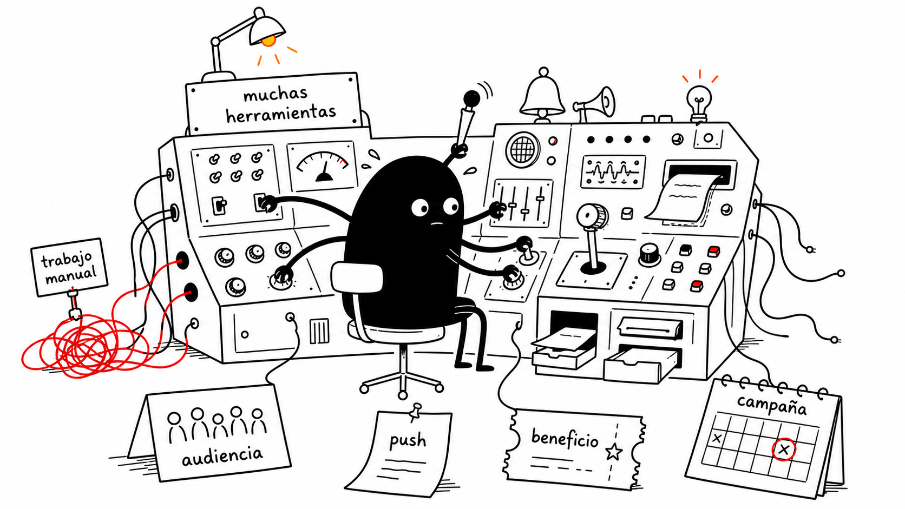
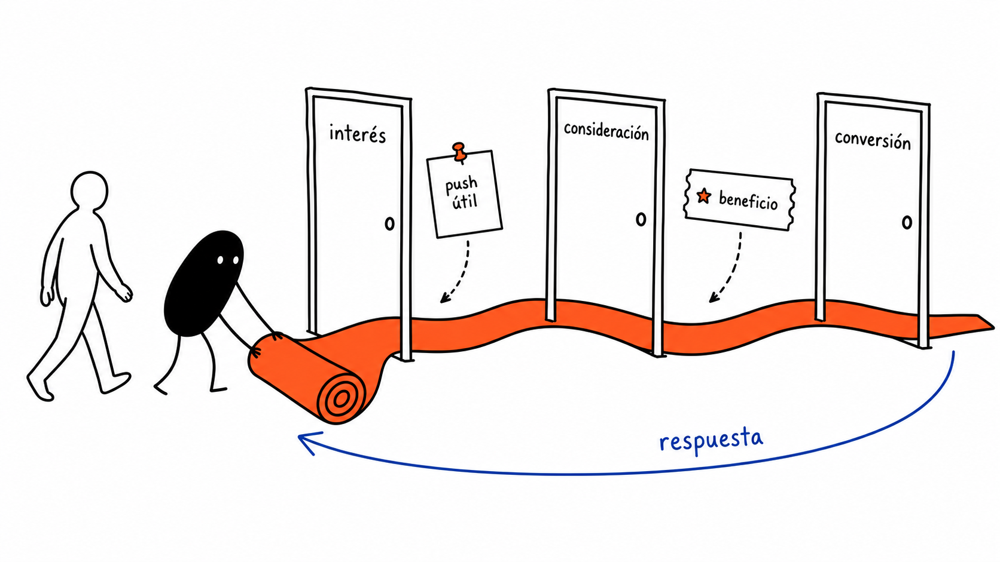

Contexto distribuido
Stats, Points, Coupons, Transactions y Predictions viven en distintas vistas.
Qurable Engage Copilot usa el contexto que Qurable ya reúne para proponer un Segment, una Next Best Action y una Campaign lista para revisar.

Customer profiles, Predictions, Segments, Campaigns, Coupons, Promotions y Outreach aportan el contexto. Preparar una acción coordinada todavía exige recorrerlos y componer la estrategia.

Stats, Points, Coupons, Transactions y Predictions viven en distintas vistas.
Segment, Rewards, Campaign y Outreach se definen paso a paso.
Dashboards mide resultados; la próxima decisión requiere reunir ese contexto.
El copiloto toma el AI briefing que Qurable ya plantea y lo conecta con un Segment, Rewards y una Campaign en Draft.
Stats, Predictions y loyalty data explican qué acción conviene para ese customer y por qué. Customer data + Predictions + Strategies + revisión de marketing.
Stats, Points, Coupons, Transactions y Badges.
CLV tiers, Redemption likelihood y Churn risk sostienen la recomendación.
Segment, Campaign, Rewards y Outreach content quedan listos para revisión.
Reactivar customers con Churn risk alto y CLV relevante.
Last purchase, Purchases, Points, Coupon history y Predictions.
Churn risk, CLV tiers y Redemption likelihood explican la oportunidad.
Coupon o Points reward, con una razón priorizada.
Segment y Rewards quedan configurados con status Draft.
Contenido para WhatsApp o Email, preparado para revisión humana.
Profile, Stats, Points, Coupons, Transactions y Predictions.
Segments, Triggers, Campaigns, Missions y Trivias.
Promotions, Coupons, Outreach, Conversion Rate y ROI.
Cada Campaign puede enriquecer la siguiente Next Best Action.
Interpreta el objetivo, prepara el AI briefing y prioriza las Next Best Actions.
objective → briefing → actions
Combina Stats, actividad, CLV tiers, Redemption likelihood y Churn risk.
profile → predictions → priority
Organiza Segments, Triggers, Campaigns y Missions alrededor del objetivo.
segment → campaign → trigger
Combina Points, Coupons, Promotions y contenido para WhatsApp o Email.
rewards → content → draft
Revisa Drafts y monitorea Reached, Conversion Rate, Revenue y ROI.
review → activate → measure
Elegimos reactivación para recorrer Customer profile, Churn risk, Next Best Actions y Campaign en una misma historia.
Conectar una señal del customer con una acción concreta.
Stats, actividad y loyalty data sostienen el caso.
Una Prediction reconocible concentra la historia.
Segment, Rewards y Outreach vuelven tangible la propuesta.
Reached, Conversion Rate y ROI prueban utilidad.
Triggers y recurring Campaigns amplían la capacidad.
Medir tiempo, completitud del Draft y claridad del AI briefing.
Comparar Reached, redemptions, Revenue, Conversion Rate y opt-out.
Usar Dashboards para enriquecer la próxima Next Best Action.
Cada Campaign queda en Draft para revisión humana.
Rewards y Promotions respetan límites configurados.
Draft, Active y Paused hacen visible el control operativo.
Onboarding, contacto verificado y opt-out protegen al customer.
El AI briefing muestra Predictions y señales relevantes.
Dashboards y grupos de control validan el impacto.
Qurable ya aporta Customer data, Predictions y Strategies. Q-Leap conecta esas capacidades en una experiencia asistida.
AI briefing y acciones priorizadas a partir de loyalty data.
Propone Segment, Rewards, Campaign Draft y Outreach content.
Triggers y recurring Campaigns responden a resultados de Dashboards.

Qurable Engage Copilot usa Customer data, Predictions y Strategies de Qurable para preparar Segment, Rewards, Campaign y Outreach.
Próximo paso → demostrarlo con Churn risk